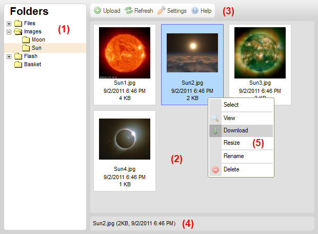

CKFinder Arayüzü Hakkında
Kullanıcı dostu ve karmaşadan uzak olarak dizayn edilmiş olan arayüz alışılmışları gibi masaüstü dosya yöneticilerine benzer şekildedir.
Aşağıda resimlerle arayüzün bazı bölümleri verilmiştir:

- Klasör Paneli – ağaç yapısında klasörleri görmenizi sağlayan alandır.
- Dosya Paneli – seçili klasördeki dosyaları gördüğünüz alandır.
- Araç Çubuğu – yapılabilecek işlemlerin tuşlarının yer aldığı alandır..
- Durum Çubuğu – seçili dosya hakkında detaylı bilgilerin yer aldığı alandır.
- İçerik Menüsü – tıklanan dosya üzerinde yapılabilecek çeşitli işlemlerin listelendiği menüdür.